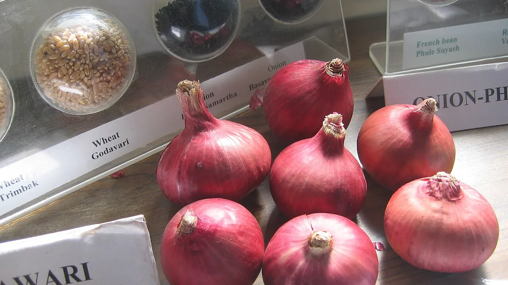

कांदा चाळ अनुदान योजना
Kanda Chal Subsidy — Onion Storage Structures in Maharashtra
काढणी के तुरंत बाद पूरा माल एक साथ मंडी में आता है और भाव गिर जाता है। चाळ भाव नहीं बढ़ाती — वह आपको इंतज़ार करने की ताक़त देती है, और सरकार उस पर 50% तक अनुदान देती है।
✍️ Kunal Rajput — KrashiMitra⏱️ 9 मिनट पढ़ें📅 अगस्त 2026

बारामती, महाराष्ट्र का प्याज — कांदा चाळ इसी माल को भाव आने तक रोक रखने की जगह है।
प्याज रोकने की जगह, और उस पर आधा पैसा सरकार का
💰
₹87,500
25 टन पर अधिकतम अनुदान
📉
40–50%
खुले भंडारण में नुक़सान
📄
7/12 नोंद
प्याज दर्ज न हो तो अर्ज ख़ारिज
📖
भूमिका
प्याज की सबसे बड़ी समस्या दाम नहीं, समय है। काढणी के तुरंत बाद पूरे नाशिक-नगर पट्टे का माल एक साथ मंडी में आता है, भाव गिरता है, और किसान बेचने को मजबूर होता है — क्योंकि रखने की जगह नहीं। जो किसान तीन-चार महीने रोक लेता है, वही अक्सर दुगुना भाव पाता है।
यही रोकने की जगह है कांदा चाळ — हवादार, छायादार भंडारण ढाँचा। और महाराष्ट्र सरकार इसे बनाने पर लागत का 50% अनुदान, अधिकतम ₹3,500 प्रति मेट्रिक टन देती है। खुले में या कच्ची जगह रखा प्याज 40–50% तक सड़ जाता है; सही चाळ में यह नुक़सान बहुत घट जाता है। इस लेख में — अनुदान का पूरा हिसाब, पात्रता, अर्ज की प्रक्रिया, और चाळ बनाते समय की असली तकनीकी बातें।
विज्ञापन
💰
अनुदान कितना — पूरा हिसाब
अनुदान क्षमता के हिसाब से मिलता है, बनाने में जितना ख़र्च हुआ उसके हिसाब से नहीं। नियम दो हैं और दोनों में से जो कम बैठे, वही मिलता है:
नियम 1: कुल लागत का 50%
नियम 2: अधिकतम ₹3,500 प्रति मेट्रिक टन क्षमता
चाळ की क्षमता
अधिकतम अनुदान (₹3,500/टन से)
5 मेट्रिक टन
₹17,500
10 मेट्रिक टन
₹35,000
15 मेट्रिक टन
₹52,500
20 मेट्रिक टन
₹70,000
25 मेट्रिक टन
₹87,500
यानी अगर आपने 25 टन की चाळ ₹1,60,000 में बनाई, तो 50% = ₹80,000 बनता है और वही मिलेगा (क्योंकि वह ₹87,500 से कम है)। लेकिन अगर वही चाळ ₹2,50,000 में बनाई, तो 50% = ₹1,25,000 होने के बावजूद ऊपरी सीमा ₹87,500 ही लागू होगी।
⚠️
अनुदान की दर, ऊपरी सीमा और पात्र क्षमताएँ हर वर्ष के शासन निर्णय से बदल सकती हैं, और कुछ ज़िलों में अलग योजना के तहत अलग दर भी लागू होती है। अर्ज करने से पहले अपने तालुका कृषी अधिकारी या महाडीबीटी पोर्टल पर उसी वर्ष का विवरण ज़रूर देख लें।
✅
कौन पात्र है
ज़मीन अपने नाम पर हो: चाळ जिस ज़मीन पर बनेगी, उसका 7/12 आपके नाम होना चाहिए।
7/12 पर प्याज की नोंद हो: यह सबसे अहम शर्त है — रिकॉर्ड में उस मौसम की प्याज की फसल दर्ज होनी चाहिए। इसीलिए ई-पीक पाहणी समय पर करना यहाँ सीधे पैसे से जुड़ जाता है।
वास्तव में प्याज उगाते हों: यह योजना प्याज उत्पादक किसान के लिए है।
व्यक्ति के अलावा भी पात्र: किसान समूह, महिला बचत गट, शेतकरी उत्पादक कंपनी (FPO), पंजीकृत कृषि संस्थाएँ और सहकारी संस्थाएँ भी अर्ज कर सकती हैं।
पहले से इसी घटक का लाभ न लिया हो: एक ही लाभार्थी को दोबारा आमतौर पर नहीं मिलता।
🔑
7/12 पर प्याज की नोंद न होना — यही इस अनुदान में अर्ज ख़ारिज होने की सबसे आम वजह है। खरीफ़ या रबी की प्याज बोते ही DCS MH ऐप से पीक पाहणी कर लीजिए, वरना चाळ बनने के बाद भी अनुदान अटक जाएगा।
विज्ञापन
🖥️
अर्ज कैसे करें — कदम दर कदम
महाडीबीटी पर लॉगिन करें:mahadbt.maharashtra.gov.in/Farmer पर अपने खाते से लॉगिन कीजिए (खाता न हो तो पहले पंजीकरण)।
“फलोत्पादन” घटक चुनें: एकात्मिक फलोत्पादन विकास अभियान (MIDH) के अंतर्गत काढणीपश्चात व्यवस्थापन में “कांदा चाळ” चुनें।
क्षमता चुनें: 5, 10, 15, 20 या 25 मेट्रिक टन — जितनी प्याज आप वाक़ई रखते हैं, उतनी ही।
कागज़ात अपलोड करें: 7/12 (प्याज की नोंद सहित), 8-अ, आधार, आधार-लिंक्ड बैंक पासबुक, और ज़रूरत हो तो जाति प्रमाण पत्र व संमति पत्र।
पूर्व-संमति का इंतज़ार करें: यही सबसे अहम कदम है — पूर्व-संमति (pre-approval) मिलने से पहले चाळ बनाना शुरू न करें।
तय नक्शे के अनुसार बनवाएँ: कृषि विभाग के मानक आकार और डिज़ाइन के अनुसार ही निर्माण करें। यहीं ज़्यादातर फ़ाइलें अटकती हैं।
पूरा होते ही सूचना दें: तालुका कृषी अधिकारी को लिखित सूचना दें, ताकि मौका-जाँच (inspection) हो सके।
बिल और फ़ोटो जमा करें: निर्माण सामग्री के बिल, निर्माण के चरणों की फ़ोटो और जाँच रिपोर्ट के बाद अनुदान सीधे बैंक खाते में आता है।
🏗️
चाळ बनाते समय — जो असल में प्याज बचाता है
अनुदान तो एक बार मिलता है; चाळ बीस साल चलती है। इसलिए बनाते समय ये बातें अनुदान से भी ज़्यादा अहम हैं:
लंबाई पूरब-पश्चिम रखें: ताकि दोपहर की सीधी धूप ढेर पर न पड़े और चाळ के आर-पार हवा चलती रहे।
दोनों तरफ़ जालीदार दीवार: बाँस, लकड़ी की फट्टियाँ या जाली — हवा का आर-पार बहना ही पूरी चाळ का सिद्धांत है। पक्की बंद दीवार बनाना सबसे बड़ी ग़लती है।
ढेर की ऊँचाई सीमित रखें: बहुत ऊँचा ढेर लगाने पर नीचे वाला प्याज दबकर गरम होता है और सड़ना वहीं से शुरू होता है।
ज़मीन से ऊपर, हवादार फ़र्श: नीचे से भी हवा लगनी चाहिए। सीधे ज़मीन पर प्याज रखने पर नमी नीचे से चढ़ती है।
छत पर सही ढलान: बारिश का पानी टपके नहीं, और भीतर की गर्मी बाहर निकल जाए।
ऊँची जगह चुनें: जहाँ बारिश का पानी न भरे और आसपास से नमी न आए।
🌬️
प्याज सड़ता नमी और गर्मी से है, समय से नहीं। अच्छी चाळ का काम सिर्फ़ इतना है कि ढेर के हर हिस्से तक हवा पहुँचती रहे। इसीलिए “मज़बूत पक्की दीवार” वाली चाळ अक्सर बाँस वाली चाळ से ख़राब नतीजे देती है।
🧅
भंडारण से पहले — प्याज की तैयारी
बात
✅ सही तरीक़ा
❌ जो नुक़सान करता है
काढणी का समय
जब 50–70% पात (पत्तियाँ) गिर जाएँ
हरी पात में ही उखाड़ लेना
सुकवणी (क्योरिंग)
खेत में पात से ढककर कुछ दिन सुखाना
गीला प्याज सीधे चाळ में भरना
पात काटना
गर्दन 2–3 सेंमी छोड़कर काटें
बिल्कुल गर्दन से काटना — वहीं से सड़न घुसती है
छँटाई
कटे, दबे, जोड़वाले और डेंगळे निकाल दें
सब एक साथ भर देना — एक सड़ा कई बिगाड़ता है
किस्म
भंडारण योग्य रबी किस्म
खरीफ़ का प्याज लंबे भंडारण के लिए रखना
भरने के बाद
हर 15-20 दिन में ढेर छाँटकर सड़े निकालें
भरकर भूल जाना
ध्यान दीजिए — खरीफ़ (लाल) प्याज लंबे भंडारण के लिए बना ही नहीं है। चाळ का असली फ़ायदा रबी के प्याज पर मिलता है, जो सही तैयारी के साथ कई महीने टिकता है।
🚫
ये गलतियाँ कभी न करें
पूर्व-संमति से पहले चाळ बना लेना — बनी हुई चाळ पर अनुदान नहीं मिलता, चाहे बिल कितने भी सही हों। यह सबसे महँगी ग़लती है।
7/12 पर प्याज की नोंद न होना — पीक पाहणी न की तो काग़ज़ पर आप प्याज उत्पादक ही नहीं हैं।
मानक डिज़ाइन से हटकर बनाना — जाँच में नाप और बनावट मिलनी चाहिए, वरना फ़ाइल रुक जाती है।
पक्की बंद दीवार बनवाना — यह चाळ नहीं, गोदाम बन जाता है। हवा रुकी तो प्याज सड़ेगा।
गीला प्याज भरना — बिना क्योरिंग का प्याज पूरे ढेर में सड़न फैला देता है।
निर्माण की फ़ोटो न लेना — नींव से लेकर पूरा होने तक की तस्वीरें फ़ाइल को आसान बना देती हैं।
भरने के बाद पलटकर न देखना — हर 15-20 दिन में छँटाई न हो, तो एक सड़ा प्याज पूरा कोना ले जाता है।
🗓️
साल भर का क्रम — कब क्या करें
समय
ज़रूरी काम
प्याज बोते ही
DCS MH ऐप से ई-पीक पाहणी करें — 7/12 पर प्याज की नोंद ज़रूरी है
वित्तीय वर्ष खुलते ही
महाडीबीटी पर कांदा चाळ का अर्ज करें — अब चयन “पहले आओ, पहले पाओ” से है
पूर्व-संमति मिलने पर
तभी निर्माण शुरू करें; मानक डिज़ाइन और नाप का पालन करें
निर्माण के दौरान
हर चरण की फ़ोटो और सामग्री के बिल सहेजें
चाळ पूरी होते ही
तालुका कृषी अधिकारी को सूचना दें, मौका-जाँच करवाएँ
रबी काढणी (मार्च–मई)
क्योरिंग और छँटाई के बाद ही चाळ में भरें
भंडारण के दौरान
हर 15-20 दिन में ढेर छाँटें, सड़े निकालें, हवा का रास्ता खुला रखें
✅
निष्कर्ष
तीन बातें याद रखिए। पहली — अनुदान लागत का 50% या ₹3,500 प्रति टन, जो कम हो; 25 टन पर अधिकतम ₹87,500। दूसरी — 7/12 पर प्याज की नोंद और पूर्व-संमति, ये दो काग़ज़ी शर्तें ही ज़्यादातर अर्ज ख़ारिज कराती हैं। तीसरी — चाळ की असली ताक़त उसकी हवा है, उसकी दीवार नहीं।
चाळ भाव नहीं बढ़ाती — वह आपको इंतज़ार करने की ताक़त देती है, और भाव उसी इंतज़ार से मिलता है।
⚠️
अनुदान की दर, पात्र क्षमताएँ, डिज़ाइन के मानक और अर्ज की विंडो हर वर्ष के शासन निर्णय से बदलती हैं। अंतिम जानकारी हमेशा महाडीबीटी पोर्टल या अपने तालुका कृषी अधिकारी से ही पक्की करें। कृषि मित्र न कोई एजेंट है, न किसी का अर्ज भरता है।
विज्ञापन
❓
अक्सर पूछे जाने वाले सवाल
1कांदा चाळ अनुदान कितना मिलता है?
अनुदान कुल लागत का 50%, अधिकतम ₹3,500 प्रति मेट्रिक टन क्षमता है — दोनों में से जो कम बैठे वही मिलता है। यानी 25 मेट्रिक टन की चाळ पर अधिकतम ₹87,500, 10 टन पर ₹35,000 और 5 टन पर ₹17,500। पात्र क्षमताएँ 5, 10, 15, 20 और 25 मेट्रिक टन हैं।
2कांदा चाळ अनुदान के लिए अर्ज कहाँ करें?
अर्ज महाडीबीटी पोर्टल (mahadbt.maharashtra.gov.in/Farmer) पर एकात्मिक फलोत्पादन विकास अभियान (MIDH) के काढणीपश्चात व्यवस्थापन घटक में “कांदा चाळ” चुनकर किया जाता है। वहीं क्षमता चुननी होती है और कागज़ात अपलोड करने होते हैं।
3कांदा चाळ अनुदान के लिए कौन से कागज़ात लगते हैं?
मुख्यतः 7/12 उतारा (जिस पर प्याज की फसल दर्ज हो), 8-अ उतारा, आधार कार्ड और आधार-लिंक्ड बैंक पासबुक। साझा 7/12 पर अन्य खातेदारों का संमति पत्र और SC/ST के लिए जाति प्रमाण पत्र भी चाहिए। निर्माण के बाद सामग्री के बिल और फ़ोटो लगते हैं।
4क्या चाळ बनाने के बाद अनुदान के लिए अर्ज कर सकते हैं?
नहीं। अनुदान सिर्फ़ उसी निर्माण पर मिलता है जो पूर्व-संमति (pre-approval) मिलने के बाद शुरू हुआ हो और तय मानक डिज़ाइन के अनुसार बना हो। पहले से बनी चाळ पर दावा नहीं बनता — यही इस योजना की सबसे महँगी ग़लती है।
5कांदा चाळ अनुदान का अर्ज सबसे ज्यादा किस वजह से खारिज होता है?
7/12 पर प्याज की फसल दर्ज न होने की वजह से। इसीलिए प्याज बोते ही DCS MH ऐप से ई-पीक पाहणी कर लेनी चाहिए। दूसरी आम वजहें हैं — पूर्व-संमति से पहले निर्माण शुरू कर देना, और मानक नाप-डिज़ाइन से हटकर चाळ बनाना।
6कांदा चाळ में प्याज कितने महीने टिकता है?
सही तरीक़े से क्योर और छाँटा गया रबी का प्याज अच्छी हवादार चाळ में कई महीने टिक जाता है, जबकि खुले में या कच्ची जगह रखे प्याज का 40–50% तक सड़ जाता है। खरीफ़ (लाल) प्याज लंबे भंडारण के लिए उपयुक्त नहीं है — चाळ का असली फ़ायदा रबी के प्याज पर मिलता है।
7कांदा चाळ की दीवार पक्की बनानी चाहिए क्या?
नहीं — दोनों तरफ़ जालीदार दीवार ही चाहिए (बाँस, लकड़ी की फट्टियाँ या जाली)। पूरी चाळ का सिद्धांत ही यह है कि हवा आर-पार बहती रहे। पक्की बंद दीवार बनाने पर वह गोदाम बन जाता है, भीतर नमी और गर्मी रुकती है, और प्याज ज़्यादा सड़ता है।
8चाळ में प्याज भरने से पहले क्या तैयारी करनी चाहिए?
प्याज तब उखाड़ें जब 50–70% पात गिर चुकी हो, फिर खेत में पात से ढककर क्योरिंग करें, गर्दन 2–3 सेंमी छोड़कर पात काटें, और कटे-दबे-जोड़वाले प्याज तथा डेंगळे अलग कर दें। गीला या बिना छँटा प्याज भरने पर पूरे ढेर में सड़न फैल जाती है।
🌾
KrashiMitra.in — आपका विश्वसनीय कृषि साथी
मंडी भाव, सरकारी योजनाएं, बीज-खाद की जानकारी और फसल रोग उपचार — सब कुछ हिंदी में।